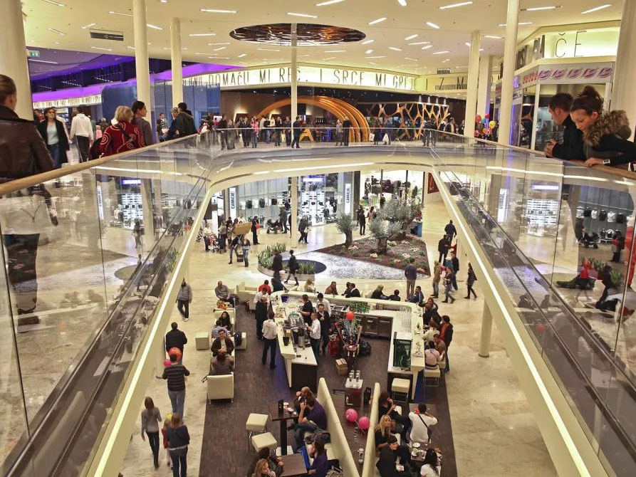
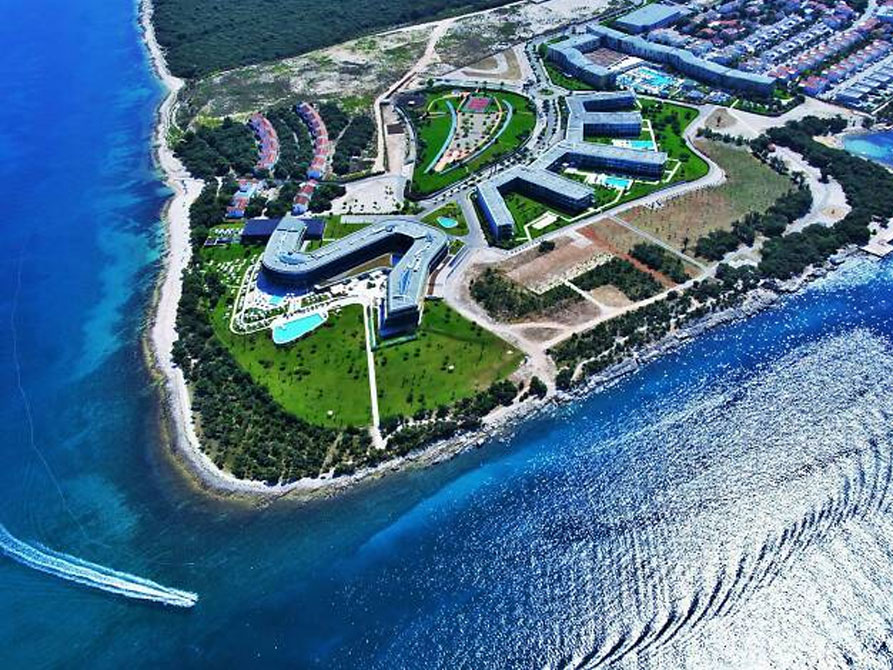
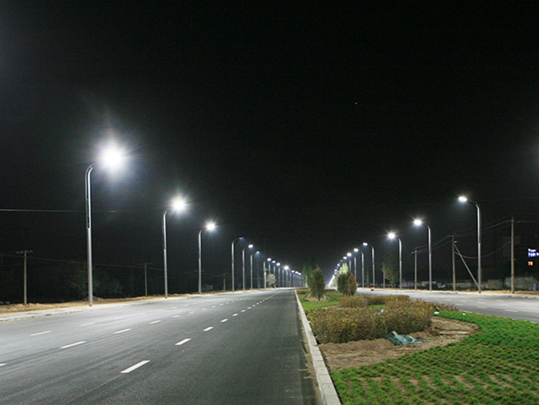

Reference
Kako je ovo WIP, umijesto Novosti ću staviti reference
Shoping centri

Westgate Zaperšić
City centar Split
Avenue Mall Osijek
Konzum Dubrava, Zagreb
Arena centar Zagreb
Billa Virovitica
Billa Garešnica
Magma Varaždin
Super nova Zadar
Garden mall Dubrava
Sportina Rijeka
Hoteli
Punta skala – hotelski resort
Javna rasvjeta

Postavljanje i održavanje javne rasvjete općine Hum na Sutli
Održavanje javne rasvjete općine Petrovsko
Održavanje javne rasvjete općine Radoboj
Izvedba kompletne mreže javne rasvjete grada Pregrade
Ostalo
Kućne instalacije na obiteljskim kućama, stambenim objektima i industrijskim halama
Povratak na vrh